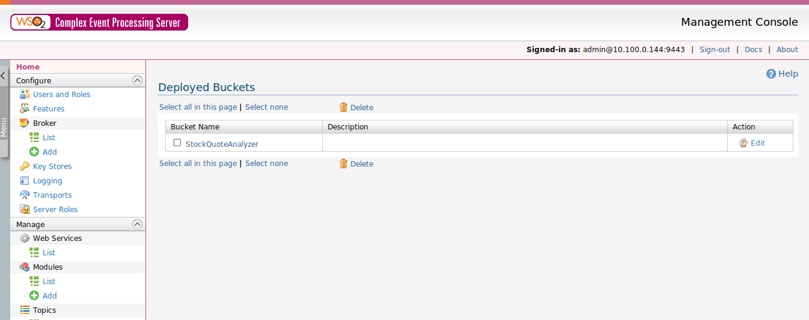
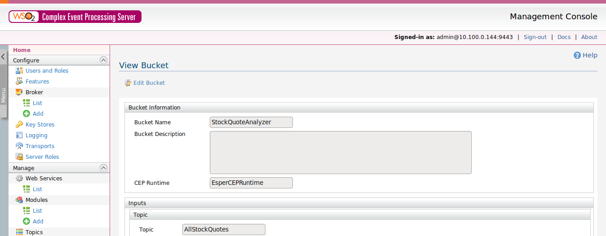
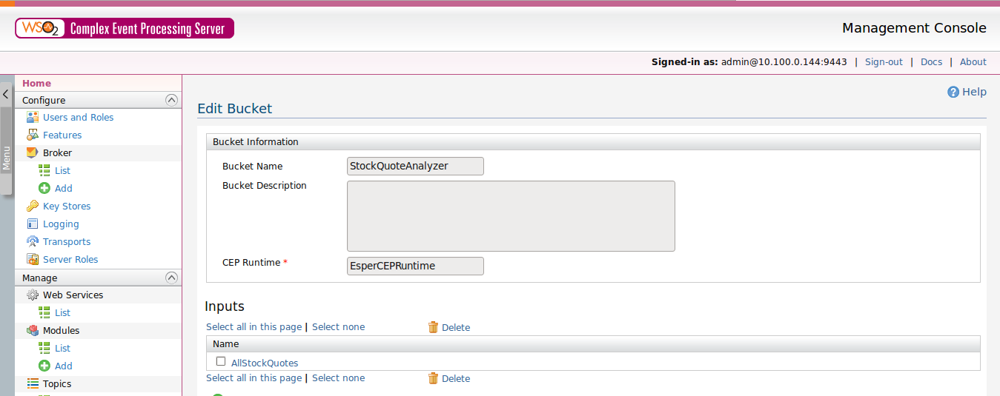
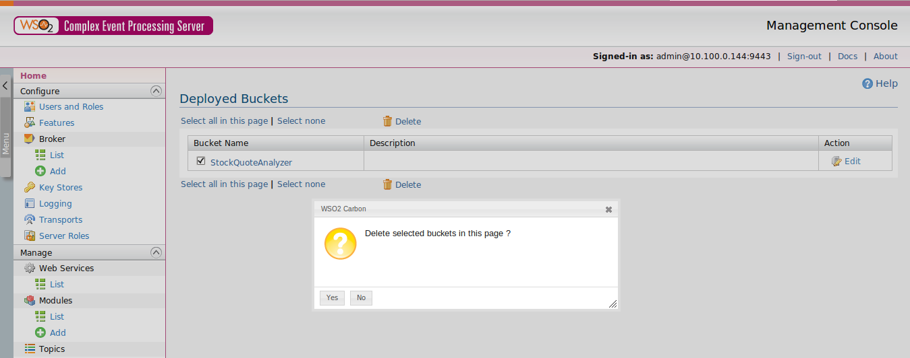
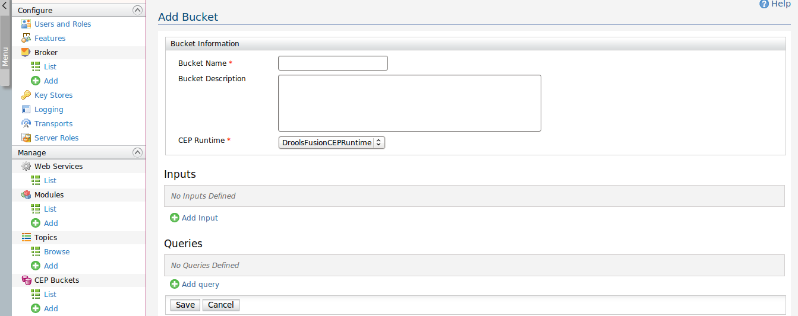
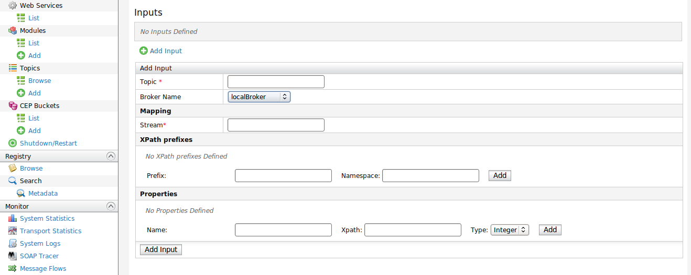
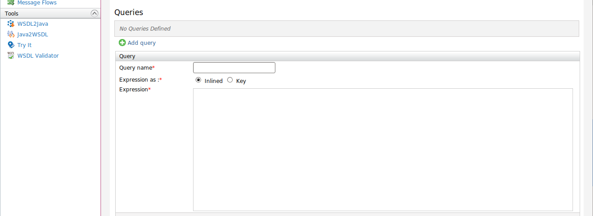
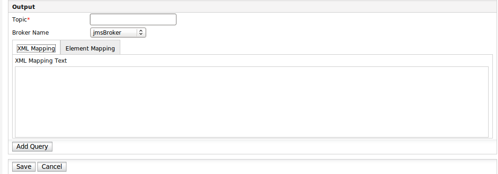

Figure 1: Deployed Buckets
Complex Event Processing server's deployed buckets page shows you a table of all the available buckets in the server. You can have three operations on available buckets in this page.The three basic features provided in this page are; "Removing Bucket" and "Viewing a bucket" and "Edit Bucket". You can delete multiple buckets at once by checking the check box against each bucket and clicking on delete button.
Once you click on the bucket name in Deployed buckets page , You will be directed to this page.

Figure 2: View Bucket
Here you can find all the information on the bucket like, name, description, engine provider, inputs, queries. In order to edit the bucket , there is a link 'Edit Bucket' in the top left corner of this page. When you click on that, you will be directed to 'Edit Bucket page'
Once you click on the "Edit Bucket" link on deployed buckets page, you will be directed to this page.

Figure 3: Edit Bucket
Here you can find all the information on the bucket like, name, description, engine provider, inputs, queries. You can remove the existing inputs and queries of the bucket and add new inputs and queries to the bucket from this page. But changing the basic information like "Bucket Name" , "Descriptions" and "Engine provider" is not allowed with this version. Once you have finished removing and adding inputs and queries, click on "Save" button and it will save to the modification to the bucket.
Once you click on "Delete" link after checking out the check box in "Deployed Bucket" you will be asked for the confirmation. when you confirm the delete operation , it will remove the bucket from the server.

Figure 4: Delete Bucket

Figure 5: Add Bucket
Once you click on the 'Add' menu item under 'CEP Buckets' Sub menu in left panel, you will be directed to Add Bucket page. Adding bucket to the server can be done in tree states.
Here you can provide the name of the bucket , Description for the bucket (Optional) and choose the Engine provider that you are going to use for the bucket. Once you click on 'Save' , this information will be saved in the server and you can add inputs and queries to the bucket by editing the bucket.
Other than the above basic information, you can add inputs to the bucket and save the bucket.
In this state you are adding all the required information for the bucket.
You can find more information about the bucket in the User guide of CEP.
Complex Event Processing Server is triggered by events. When some event source publish event or stream of events , there should be a topic to publish the events to be received by the CEP Server. By defining inputs, we are defining a topic where an event source can publish to. An input consists of five main elements

Figure 6: Add Input
Topic which an event source should publish events to be received by the CEP Server
Name of the broker in which, events are used to send through. You need to create a broker if any thing is not listed in this drop down. To create a broker , Click on 'Add' menu item under Broker sub menu which exists under 'Configure' menu in left panel
Name of the stream of the events
Xpath of the receiving xml elements to be mapped
Properties to be extracted from the receiving xml element
Once you provide the above information and click on 'Add Input' button, it will listed in the inputs table and you will be able to see details of the topic once you click on the input name listed in the table. If you have added wrong values you can simply delete the input from the table by selecting the check bix provided for the particular input and click on delete button.
NOTE : Inputs will not be save to the server until you click on the 'Save' button for the bucket.
Filtering and triggering new events on received events is the basic idea of the CEP Server. To filter events there should be some criteria specified in the CEP Engine. This criteria which is needed to filter events is provided with the query of the CEP Bucket. There can be one or more queries and user can decide the number of queries required to perform the expected task.

Figure 7: Add Query
Query consists of three elements.
Name of the query which is used to identify
Actual query text contains in the expression, This can be inlined or can be browsed from registry
User can type the query in the provided space
User can browse the registry by clicking on the provided registry browser and select the query expression from registry.(Before browsing the registry to get this from the registry , user needs to store the query in registry)
When an event is triggered or filtered from the input events, that event need to be publish to a topic to be received by another event listener. In configuring output we are providing the topic which the new event to be published and the format of the output event.

Figure 8: Add Output
User has to provide three things when defining an output
Topic which a filtered event should be published. Any one interested in receiving filtered events need to be subscribed to this topic
Name of the broker in which, events are used to send through. You need to create a broker if any thing is not listed in this drop down. To create a broker , Click on 'Add' menu item under Broker sub menu which exists under 'Configure' menu in left panel
User can provide the full output xml element to be fired. When there are required fields to be filled with filtered values, names of those values should be provided within curly brackets and CEP Server will identify them and replace with the filtered values
User can create the format of the output xml element by providing properties and their types.
Note: After filling all the required fields of the Query , click on add query button to add Query to the bucket. Once you clicked it will disappear the query form and added query will be appeared in Queries table.
Note: As the last step of adding a bucket , click on save button. Once you clicked it will redirect to the deployed buckets page and deployed bucket will be appeared in buckets table. Further to check whether you have entered the details correctly you can click on the link with the defined bucket and it will show added details. You can come back to the previous adding bucket page by clicking on the back button provided or if needed to edit the bucket you can click on the "Edit" link on the top of the View bucket Page.